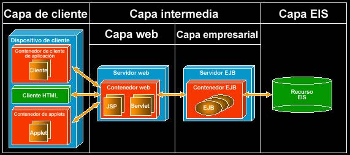

| Concepto: Visión general de Java 2 Platform Enterprise Edition (J2EE) |
 |
|
| Elementos relacionados |
|---|
IntroducciónEn el complejo y rápido mundo de las aplicaciones distribuidas de hoy en día, es de gran importancia hacer que las aplicaciones lleguen al mercado lo más rápidamente posible. Esto significa que los equipos de proyectos no pueden permitirse el lujo de invertir tiempo en desarrollar servicios a nivel de sistema, como los relacionados con la conectividad remota, la denominación de nombres, la persistencia, la seguridad o la gestión de transacciones. El equipo de proyectos necesita desarrollar y utilizar componentes reutilizables y portables. Lo que no se desea es invertir tiempo volviendo a inventar arquitecturas sólidas y reconocidas. La plataforma Java™ Enterprise Edition (J2EE™) satisface estas necesidades proporcionando una infraestructura basada en estándares y bien documentada para desarrollar y ejecutar aplicaciones Java distribuidas, de múltiples capas y basadas en componentes. Esta infraestructura maneja una gran parte de la complejidad de bajo nivel de las aplicaciones como, por ejemplo, la relacionada con la conectividad remota, la denominación de nombres, la persistencia, la seguridad y la gestión de transacciones, haciendo que los desarrollares sólo tengan que concentrase en la lógica empresarial de la aplicación. La plataforma J2EE está compuesta por:
La plataforma J2EE es análoga a los servicios que proporcionan las herramientas de programación utilizadas por el sistema operativo de su equipo, el sistema operativo proporciona servicios estándares sobre los que se desarrollan y ejecutan aplicaciones, sin tener que preocuparse de la gestión a bajo nivel en relación con el acceso en disco, memoria, salida de vídeo, red, etc. De esta forma es posible concentrarse en los detalles de la aplicación y no en los detalles del sistema que subyace bajo ella. La plataforma J2EE proporciona un sistema operativo sofisticado para aplicaciones empresariales. Mediante la plataforma J2EE, se simplifica el esfuerzo de desarrollo de forma que el equipo de proyectos puede centrar sus esfuerzos en la verdadera lógica empresarial de la aplicación, en lugar de invertir un tiempo crítico del desarrollo en la resolución de problemas a nivel del sistema. Un equipo de proyectos que se puede centrar en lo que la aplicación realiza, en lugar de centrarse en cómo ofrecer todos los servicios subyacentes que la aplicación necesita, es mucho más probable que suministre un sistema sin errores y a tiempo que satisfaga las necesidades de sus usuarios. Consulte la visión general de la plataforma J2EE de Sun en http://java.sun.com/ para obtener más información. Siga los enlaces Products & APIs > Java™ 2 Platform, Enterprise Edition (J2EE™) > Overview. Desarrollo en esencia de J2EEDesde la perspectiva del desarrollador de aplicaciones:
EjemploUn ejemplo sencillo de una aplicación J2EE es un sitio de comercio electrónico, en que un cliente (usuario) utiliza un navegador web para acceder de forma remota al servidor J2EE. El servidor J2EE proporciona servicios de capa web y de capa empresarial, e interactúa con una capa EIS (Enterprise Information Systems) de fondo que proporciona acceso a sistemas de gestión de bases de datos relacionales. Por qué utilizar J2EEDeseará utilizar una plataforma J2EE para desarrollar una aplicación empresarial o de comercio electrónico de Java si si encuentra en alguno de estos casos:
Cada uno de estos puntos se tratará en más detalle en el resto de esta sección. Estándar y probada en el mercadoLos componentes J2EE se ejecutan en contenedores J2EE, normalmente se proporcionan como parte de un servidor J2EE compatible. Estos contenedores proporcionan un conjunto de servicios estándar (API) que utilizan los componentes J2EE. Estas API son:
PortabilidadLas aplicaciones y componentes J2EE son portables en relación con servidores J2EE compatibles, sin que sea necesario modificar el código, de forma que es posible desplegar una aplicación en el servidor J2EE compatible que elija con tan sólo actualizar la información de despliegue específica del servidor en los archivos de descriptor de despliegue XML (eXtended Markup Language). La estandarización de la especificación J2EE ha dado lugar a la competitividad del mercado, ahora existe la posibilidad de elegir servidores J2EE compatibles de acuerdo a sus necesidades y presupuesto. Componentes reutilizablesPuesto que cumplen los estándares J2EE, los componentes J2EE se pueden comprar como paquetes disponibles comercialmente y adjuntarlos a su aplicación J2EE según sea necesario, ahorrando esfuerzos de desarrollo (especialmente en la depuración y las pruebas). Si es usted quien desarrolla un componente, puede volver a utilizarlo en otra aplicación o desplegarlo en distintos servidores J2EE compatibles, si así es necesario. Patrones de diseño y arquitectura sólida y reconocidaLa plataforma J2EE define una arquitectura de aplicación de varias capas bien estructurada. Con el soporte de la arquitectura de J2EE, los desarrolladores pueden comenzar con rapidez el desarrollo de la verdadera lógica empresarial de la aplicación. La documentación J2EE incluye:
Visite la página http://java.sun.com/ para obtener más información sobre la plataforma J2EE. Siga los enlaces J2EE > Blueprints. EscalabilidadJ2EE da soporte a la escalabilidad para aumentar el rendimiento o para satisfacer mayores cargas de varias maneras:
Herramientas de desarrollo y despliegueLos proveedores han respondido a las necesidades de herramientas J2EE proporcionando un soporte excelente para el desarrollo de J2EE en sus entornos de desarrollo integrado (IDE) de Java entre las que se incluyen:
Integración de fondoEl término "de fondo" hace referencia a la capa del sistema de información de la empresa (EIS) de la aplicación. Los sistemas de fondo pueden ser por ejemplo, sistemas de gestión de bases de datos relacionales, sistemas tradicionales o sistemas de planificación de recursos de la empresa (ERP). J2EE da soporte al acceso mediante transacciones a sistemas de gestión de bases de datos relacionales de EIS mediante la utilización de las API JTA y JDBC. Además, los contenedores EJB dan soporte a la persistencia gestionada por contenedor, en que la conexión y el acceso al sistema de gestión de bases de datos transaccionales la maneja de forma automática el contenedor. La SPI (Service Provider Interface) de la arquitectura de conector J2EE define un estándar para conectar recursos de un EIS que no sea un sistema de gestión de bases de datos relacionales con un conector J2EE. Un adaptador de recursos específicos de un EIS (que un proveedor de un EIS proporciona) se conecta con el contenedor J2EE, ampliando las posibilidades del conector de forma que proporcione un soporte seguro y transaccional para dicho EIS. Los componentes en un contenedor pueden entonces acceder a un EIS mediante la SPI de la arquitectura de conector J2EE. Nota: en versiones anteriores a J2EE 1.3 no se da soporte a la SPI de la arquitectura de conector J2EE. SeguridadJ2EE proporciona unas potentes y simples características de seguridad. La información de seguridad para los componentes J2EE se define en sus descriptores de despliegue. Esta información define qué roles de seguridad están autorizados a acceder a métodos y/o URL concretos de un componente. Un rol de seguridad es simplemente un nombre lógico que se da a un grupo de usuarios, por ejemplo, a todos los miembros de un equipo de gestión de una organización se les podría asignar un rol denominado "gestores". Puesto que la información de seguridad se declara en el descriptor de despliegue, el comportamiento de seguridad se puede cambiar sin la necesidad de un costoso ciclo de actualización-depuración-prueba con el código. Arquitectura de varias capasJ2EE es una arquitectura de aplicaciones distribuidas de varias capas que está compuesta de una capa de cliente, una capa intermedia y una capa EIS o de fondo. En la figura 1 se muestra la arquitectura de varias capas de la plataforma J2EE, así como los distintos contenedores J2EE que dan soporte a los componentes J2EE.  Figura 1: Arquitectura de varias capas de J2EE. Capa de clienteLos componentes de la capa de cliente se ejecutan en contenedores de cliente. La capa de cliente se puede implementar de las siguientes maneras:
Capa intermediaLa capa intermedia está compuesta de una capa web y una capa empresarial. Los componentes de la capa web se ejecutan en un servidor web J2EE que proporciona un contenedor web. Los componentes de la capa empresarial se ejecutan en un servidor de aplicaciones J2EE que proporciona un contenedor EJB. Capa webLos componentes web incluyen servlets y páginas JSP, que se encargan de gestionar la interacción con la capa de cliente, aislando los clientes de la capa EIS y de la capa empresarial. Los clientes realizan sus solicitudes a la capa web, que procesa las solicitudes y devuelve los resultados a los clientes. Las solicitudes de cliente a los componentes en la capa web generalmente dan lugar a solicitudes de capa web a componentes en la capa empresarial, que a su vez, podrían dar lugar a solicitudes en la capa EIS. Capa empresarialLos componentes de la capa empresarial la forman los EJB.
Capa EISLa capa EIS representa los datos almacenados de la aplicación, a menudo en forma de un sistema de gestión de bases de datos relacionales. La capa EIS también podría estar formada por sistemas tradicionales o ERP, a los que se accede mediante la API de arquitectura de conector J2EE. Consulte la página http://java.sun.com/ para obtener más información sobre la API de arquitectura de conector J2EE. Siga los enlaces Products & Technologies > J2EE > J2EE Connector Architecture. Consulte la sección Concepto: configuraciones de despliegue de J2EE para obtener más información sobre las configuraciones de despliegue estándar de J2EE. Servidores J2EELos servidores J2EE son productos comerciales que implementan la plataforma J2EE. Ejemplos de servidores comerciales de J2EE son BEA WebLogic, Borland Enterprise Server, IBM WebSphere e iPlanet. El término "servidor J2EE" se utiliza a veces de forma algo ambigua. Normalmente, quiere decir que se trata de "un servidor J2EE que da soporte tanto a un contenedor web como a un contenedor EJB". Utilizando una terminología más estricta, un servidor web J2EE (como el Tomcat de implementación de servidor web de referencia de J2EE) da soporte a un contenedor Web; un servidor de aplicaciones (o EJB) J2EE que da soporte a un contenedor EJB. Contenedores J2EELos componentes J2EE se ejecutan en, o los alojan, los contenedores J2EE que normalmente se proporcionan como parte de un servidor J2EE comercial. Los contenedores proporcionan un entorno de tiempo de ejecución y un conjunto estándar de servicios (API) a los componentes que se ejecutan en el contenedor, además de dar soporte a las API J2SE estándar. J2EE define los siguientes tipos de contenedores: Contenedor de cliente de aplicaciónUn cliente de aplicación J2EE se ejecuta en un contenedor de cliente de aplicación, que da soporte a estas API J2EE: JDBC, JMS, JAXP, JAAS, JavaMail, JAF, JSR, JAX-RPC, SAAJ, J2EE Management y JMX. Desde un punto de vista práctico, la instalación J2SE estándar comprende los contenedores de cliente de aplicación. El contenedor de cliente de aplicación debe dar soporte a la interfaz del manejador de devolución de llamada JAAS para satisfacer las restricciones de seguridad del resto de la aplicación empresarial en contenedores EJB y web. Contenedor de appletsUn applet se ejecuta en un contenedor de applets, que da soporte al modelo de programación de applets y da soporte a las API J2SE estándar. Desde un punto de vista práctico, los contenedores de applets se proporcionan como el plug-in de Java para un navegador web. Contenedor webLos componentes web (páginas JSP y servlets) se ejecutan en un contenedor web que se proporciona como parte de un servidor J2EE o que se proporciona como en un servidor web J2EE autónomo. Un contenedor web da soporte a los siguientes paquetes y las siguientes API J2EE: JDBC, JMS, JAXP, JAX-RPC, JAXR, JAAS, Java Mail, JAF, arquitectura de conector J2EE, JTA, JSR, SAAJ, J2EE Management, Java Servlet y JSP. Contenedor de EJBLos componentes EJB se ejecutan en un contenedor EJB, que se proporciona como parte de un servidor J2EE. Un contenedor EJB da soporte a las siguientes tecnologías y API J2EE: EJB, JDBC, JMS, JAXP, JAX-RPC, JAXR, JAAS, Java Mail, JAF, JTA, JSR, SAAJ, J2EE Management y arquitectura de conector J2EE. Las siguientes subsecciones resumen la funcionalidad básica a la que los contenedores EJB dan soporte:
Comunicaciones remotasLos contenedores EJB ocultan a los desarrolladores la complejidad de las comunicaciones remotas mediante la utilización de clases proporcionadas de contenedor (que generan las herramientas de contenedor al compilar el EJB, junto con las clases de apéndice RMI para que las utilicen los clientes) que implementan las interfaces EJB. Estas clases de implementación son objetos Java remotos a los que un cliente accede mediante la RMI de Java. Desde la perspectiva del cliente, el cliente simplemente llama a métodos en la interfaz EJB, sin ninguna consideración en relación con las comunicaciones remotas. ConcurrenciaLos contenedores EJB gestionan de forma transparente las solicitudes concurrentes de varios clientes. Los clientes actúan como si tuviesen acceso exclusivo al EJB. Por ejemplo, si dos clientes solicitan la misma entidad EJB, el contenedor la proporciona a cada una de ellas con su propia instancia y gestiona internamente la sincronización sin que lo sepa el cliente. Denominación de nombresEl contenedor EJB proporciona un espacio de nombres JNDI para ubicar los EJB desplegados en el contenedor. Los clientes EJB pueden buscar EJB para obtener una interfaz inicial. La interfaz inicial de un EJB proporciona los métodos para encontrar y crear instancias de EJB. En la medida que el contexto de denominación de nombres JNDI esté disponible desde su ubicación, los clientes pueden acceder a los EJB. PersistenciaLos desarrolladores de EJB tienen la posibilidad de elegir entre dos esquemas para almacenar los datos persistentes del EJB de entidad: CMP (Container Managed Persistence) y BMP (Bean Managed Persistence). CMP delega la responsabilidad de implementar el código de acceso de datos al contenedor, mientras que BMP deja al desarrollador de EJB la responsabilidad de implementar dicho código. CMP permite que el desarrollador de EJB utilice una implementación estándar para acceder al almacenamiento persistente simplemente con la declaración de unos campos gestionados por contenedor en un descriptor de despliegue. Gestión de transaccionesUna transacción es una secuencia de operaciones indivisibles que finalizan con éxito o con errores, de forma que si cualquier operación de la secuencia finaliza de forma errónea, no se efectúa cambio alguno en el estado del sistema. Por ejemplo, imaginemos que hay que emitir billetes aéreos: se validaría la cuenta de la tarjeta de crédito del cliente, se cargaría en dicha cuenta y, finalmente, se emitiría el billete. Esta secuencia de operaciones debería darse en una única transacción, de forma que si cualquier operación finaliza con errores, no se debería realizar cargo alguno en la cuenta de la tarjeta de crédito del cliente ni tampoco se deberían emitir los billetes. Los EJB pueden utilizar la demarcación de transacciones gestionada por bean o la demarcación de transacciones gestionada por contenedor, que se describen a continuación. Demarcación de transacción gestionada por bean
En la demarcación de transacción gestionada por bean, se utiliza una API simple para demarcar los límites de la
transacción. Se trata de la JTA (Java Transaction API), que sirve para controlar mediante programación la demarcación
de una transacción; por ejemplo, llamando a los métodos Nota: los EJB de entidad no pueden utilizar la demarcación de transacción gestionada por bean, sólo pueden utilizar la demarcación de transacción gestionada por contenedor. Demarcación de transacción gestionada por contenedorEn una demarcación de transacción gestionada por contenedor, no se proporciona el código para iniciar y finalizar las transacciones. En lugar de esto, se proporciona información de atributo de transacción en el descriptor de despliegue EJB para cada método del EJB. El atributo de transacción (uno entre Required, RequiresNew, NotSupported, Supports, Mandatory o Never) indica al contenedor qué ámbito de transacción hay que utilizar para el método. Por ejemplo, si un cliente está en ejecución dentro de una transacción y llama a un método del EJB en que el atributo de transacción está establecido en Required, entonces se llamará al método dentro del ámbito de la transacción existente. Siempre que sea posible, es mejor utilizar la demarcación de transacción gestionada por contenedor en lugar de la demarcación de transacción gestionada por bean puesto que de esta forma no es necesario añadir, depurar y probar el código de la demarcación de transacción en el componente. En lugar de ello, el comportamiento de cada uno de los métodos EJB de la transacción se especifica en el momento del despliegue, en el descriptor de despliegue. Esto significa que el comportamiento de la transacción se puede cambiar sin la necesidad de un costoso ciclo de actualización-depuración-prueba con el código. Transacciones distribuidasUna transacción distribuida es una transacción que se debe coordinar entre varias bases de datos y/o varias aplicaciones. Esto las distingue de una transacción centralizada, como en el caso de un único servidor de aplicaciones J2EE confirmando transacciones en una única base de datos. En las transacciones distribuidas se necesita una confirmación en dos fases como, por ejemplo, cuando se está actualizando más de una base de datos. Algunos contenedores EJB (como BEA WebLogic Server 6.0) sólo dan soporte a la confirmación en dos fases mediante el protocolo XA de Open Group. El programador de la aplicación no necesita escribir código alguno para manejar la confirmación en dos fases; el contenedor EJB se encarga de gestionarla. Gestión de seguridadEl contenedor EJB maneja la seguridad del EJB, con la información de seguridad que hay en el descriptor de despliegue. En el descriptor de despliegue, se declara un conjunto de roles y, para cada método EJB, se declaran los roles que están autorizados a llamar al método. En tiempo de ejecución, se asigna un rol a cada cliente del EJB, y es el contenedor EJB quien gestiona el acceso a los métodos del EJB comprobando que el rol del cliente está autorizado a llamar al método. Puesto que la información de seguridad se declara en el descriptor de despliegue, el comportamiento de seguridad se puede cambiar sin la necesidad de un costoso ciclo de actualización-depuración-prueba con el código. Gestión de ciclo de vidaLos EJB pasan por una serie de estados durante su ciclo de vida en respuesta a solicitudes del cliente. El contenedor EJB es el responsable de gestionar este ciclo de vida. Al iniciar el contenedor, el contenedor crea una agrupación de instancias de EJB en una agrupación de recursos (para disminuir el tiempo de inicio cuando se necesita un recurso EJB). Cuando un cliente EJB solicita la creación de un EJB, se asigna una instancia de la agrupación. El cliente puede hacer en ese momento solicitudes al EJB. Cuando un cliente EJB solicita la eliminación de un EJB, se devuelve la instancia a la agrupación. El contenedor notifica a una instancia EJB de distintos sucesos en el ciclo de vida del EJB, mediante un conjunto de métodos de devolución de llamada estándar, como por ejemplo:
Es necesario que cada EJB implemente estas devoluciones de llamadas a pesar de que a menudo la implementación EJB del
método de devolución de llamada está vacía. Por ejemplo, el contenedor llama al método Los EJB pueden pasar a un estado pasivo, la información de estado se guarda y la instancia de EJB se libera para que la utilice la agrupación de recursos, si así lo necesita el contenedor. El contenedor activará un EJB en un estado pasivo, es decir que se restaurará la información de estado, si se recibe una solicitud de cliente para dicho objeto EJB en concreto. Agrupación de conexiones de base de datosEl proceso de abrir una conexión de base de datos es un proceso lento. Además, las conexiones con las bases de datos pueden ser un recurso escaso debido, por ejemplo, a restricciones de licencia. El contenedor EJB gestiona este gasto mediante una agrupación de conexiones de base de datos, que mantiene abiertas y que se pueden asignar y desasignar a un EJB según sea necesario, dando lugar a unas conexiones eficientes y rápidas. Para los EJB de entidad que utilicen CMP, las conexiones de base de datos se manejan de forma automática. No es necesario escribir código SQL o de conexión, simplemente se especifica el nombre JNDI del origen de datos JDBC en el descriptor de despliegue EJB y se utilizan herramientas de despliegue específicas para generar las rutinas de conexión en lugar de hacerlo el desarrollador. El contenedor gestiona la agrupación de conexiones de base de datos. Para los EJB de entidad que utilicen BMP o para los EJB de sesión, es necesario escribir un código de conexión para conectar con un origen de datos JDBC y escribir código SQL para acceder a la base de datos. Aún así, el contenedor gestiona el origen de datos JDBC que en realidad utiliza una agrupación de conexiones de base de datos que el contenedor mantiene. MensajeríaLos contenedores EJB necesitan proporcionar soporte de mensajería para el intercambio asíncrono de mensajes. Los mensajes entregados por procesos EJB controlados por mensajes pueden utilizar JMS u otros tipos de mensajería. Debido a la relación de JMS con EJB, deben dar soporte a acceso transaccional desde componentes de contenedores EJB y web como, por ejemplo, servlets, páginas JSP y EJB. Componentes J2EELa siguiente sección proporciona una breve explicación de todos los tipos de componentes J2EE. Los componentes J2EE incluyen applets, clientes de aplicación, componentes web y Enterprise JavaBeans (EJB). Los componentes J2EE se ejecutan en contenedores J2EE. AppletsLos applets son pequeños programas que se pueden enviar junto con una página web y que se ejecutan en un navegador web. También se pueden ejecutar en otros entornos que den soporte al modelo de programación de applets. Los applets se utilizan fundamentalmente para implementar interfaces de usuario y pueden ampliar en gran medida las posibilidades de las páginas HTML. Clientes de aplicaciónLos clientes de aplicación son aplicaciones Java. Tienen acceso a los recursos de la capa intermedia y a la capa EIS de J2EE. Normalmente son aplicaciones de escritorio que proporcionan una interfaz de usuario. Se pueden utilizar para implementar un "cliente pesado" tal como se describe en la sección Concepto: patrones de distribución. Componentes webServlets de JavaLa tecnología de servlets de Java permite que un servidor web maneje las solicitudes de un cliente web y que proporcione respuestas con contenido dinámico. Un servlet de Java tiene la posibilidad de interactuar con otros componentes EJB y web para crear este contenido dinámico. El contenido que se genera puede estar en cualquier formato de documento basado en texto, incluidos HTML y XML. Los servlets de Java también se pueden utilizar como puntos finales de servicios web con la ayuda de la API JAX-RPC. Nota: la utilización de un servlet como un punto final de servicios web es una nueva característica de J2EE 1.4 (JAX-RPC 1.1) y, por lo tanto, versiones anteriores no dan soporte a esta funcionalidad. Consulte la página web http://java.sun.com/ para obtener más información sobre los servlets J2EE. Siga los enlaces J2EE > Blueprints. Páginas JavaServer (JSP)La tecnología JSP (JavaServer Pages) se basa en los servlets de Java, pero se basa en texto en lugar de basarse en el código. Una página JSP procesa solicitudes y genera respuestas como un servlet, sin embargo, su lógica está fundamentalmente orientada a la presentación. Una página JSP contiene en su mayoría código HTML estático que define el formato para presentar los datos que se obtienen de otros orígenes como, por ejemplo, EJB o JavaBeans. Un desarrollador de componentes web tiene la posibilidad de crear bibliotecas de códigos personalizados para ampliar las JSP y añadir nuevas posibilidades. Consulte la página http://java.sun.com/ para obtener más información sobre JSP. Siga los enlaces J2EE > Blueprints. Páginas HTMLLas páginas HTML sirven para dar soporte a interfaces de usuario. Pueden estar definidas como páginas web estáticas, o bien servlets y páginas web las pueden generar. La especificación J2EE indica que los clientes web J2EE deben dar soporte a la visualización de páginas HTML. JavaBeansLa API de JavaBeans define una arquitectura para crear componentes reutilizables simples. Estos componentes se pueden editar y ensamblar mediante la utilización de herramientas de construcción de aplicaciones. Para implementar JavaBeans se utiliza código Java normal, de forma que la implementación sigue siendo legible para los programadores, que podrían querer utilizar estos componentes, así como a herramientas. JavaBeans no es una tecnología J2EE, sin embargo, otras tecnologías de J2EE la utilizan. Por ejemplo, los EJB pueden utilizar JavaBeans como objetos de valor. Consulte la sección denominada Comparación entre JavaBeans y EJB para conocer las diferencias entre JavaBeans y Enterprise JavaBeans. Consulte la sección Concepto: JavaBeans para obtener más información sobre JavaBeans. Enterprise JavaBeansLa especificación de Enterprise JavaBeans estipula una arquitectura para el desarrollo y despliegue de aplicaciones empresariales distribuidas transaccionales y basadas en componentes. Los componentes que define la especificación EJB se denominan Enterprise JavaBeans (EJB). Los EJB son componentes Java del lado del servidor en que se implementan las reglas empresariales de la aplicación. Los EJB se despliegan, y ejecutan, en un entorno denominado contenedor EJB, que se ha descrito con anterioridad en la sección Contenedor de EJB, que proporciona servicios como los de gestión de transacciones, conectividad con bases de datos y seguridad. Ocultando estas complejidades, la arquitectura EJB permite que los desarrolladores de componentes se centren en la lógica empresarial. Un Enterprise JavaBean (EJB) es el resultado de la colaboración de interfaces de Java, una clase de implementación EJB y un descriptor de despliegue XML. Las interfaces EJB y la clase de implementación deben cumplir las reglas que la especificación EJB define, como las que obligan a implementar determinadas interfaces y proporcionar determinados métodos de devolución de llamadas. Las interfaces EJB incluyen interfaces iniciales que proporcionan métodos para buscar y crear instancias de EJB, así como interfaces de componentes que proporcionan los métodos empresariales de una instancia EJB concreta. Se pueden tratar como interfaces remotas, es decir, que se pueden invocar a lo largo de la red, o tratarse como interfaces locales, lo que significa que el interlocutor debe estar en el mismo proceso (o de forma más precisa en la misma máquina virtual Java). Las interfaces EJB las implementan clases de contenedor EJB que delegan métodos a la clase de implementación EJB. Una excepción es un método de búsqueda de EJB de entidad gestionado por contenedor que una clase de contenedor maneja. Hay tres tipos de EJB: beans de sesión, beans de entidad y beans controlados por mensajes. Consulte la página http://java.sun.com/ para obtener más información sobre EJB. Siga los enlaces J2EE > Blueprints. Beans de sesiónUn componente de bean de sesión proporciona servicios que implementan lógica empresarial específica del cliente. Un único cliente puede acceder a cada instancia de un bean de sesión mediante interfaces locales o remotas. Los beans de sesión tienen la posibilidad de guardar datos en una base de datos, pero normalmente utilizan beans de entidad que representan objetos empresariales para guardar datos. Las instancias de bean de sesión tienen la capacidad de mantener un estado conversacional transitorio.
Un bean de sesión podría tener un método denominado Los beans de sesión sin estado se pueden utilizar como puntos finales de servicio tal como se define en la especificación EJB y JSR. Nota: la utilización de beans de sesión como servicios web es una nueva característica de J2EE 1.4 (JSR 109 y EJB 2.1) y, por lo tanto, versiones anteriores no dan soporte a esta funcionalidad. Consulte la versión 2.1 de la especificación de Enterprise JavaBeans en la página http://java.sun.com/ para obtener más información sobre los beans de sesión. Siga los enlaces Products & Technologies > J2EE > Enterprise JavaBeans. Beans de entidadUn componente de bean de entidad proporciona servicios que implementan lógica específica del objeto empresarial. Varios clientes pueden acceder a una instancia de un bean de entidad de forma concurrente mediante interfaces locales o remotas. Los beans de entidad guardan datos de objetos empresariales en las bases de datos de forma que los datos de persistencia pueden sobrevivir a cuelgues del cliente o el contenedor. Un bean de entidad podría representar un cliente, que se podría almacenar como una fila en la tabla de clientes de una base de datos relacional. Es el desarrollador de EJB quien decide el método de persistencia, en este caso una base de datos relacional. Hay dos tipos de persistencia para un bean de entidad: persistencia gestionada por bean (BMP) y persistencia gestionada por contenedor (CMP). Los beans de entidad BMP deben implementar el código de acceso a los datos, mientras que en los beans de entidad CMP es el contenedor quien tiene implementada esta capacidad. Las implementaciones de contenedor CMP normalmente se proporcionan para persistencia en bases de datos relacionales, a pesar de que otros tipos de persistencia son también posibles (como por ejemplo, persistencia basada en archivos, etc.). Consulte la versión 2.1 de la especificación de Enterprise JavaBeans en la página http://java.sun.com/ para obtener más información sobre los beans de entidad. Siga los enlaces Products & Technologies > J2EE > Enterprise JavaBeans. Bean controlado por mensajesUn componente de bean controlado por mensajes proporciona un servicio que implementa una lógica empresarial específica del proceso de mensajes. Sólo el contenedor puede llamar a este servicio, el cliente no puede llamar directamente a este servicio mediante interfaces locales o remotas. Por ello, cuando un mensaje llega a un destino o punto final al que el bean da servicio, el contenedor llama a una instancia de bean controlado por mensajes asignado como MessageListener para el destino. Las instancias de bean controladas por mensajes no mantienen un estado conversacional, sin embargo, pueden mantener variables de instancia con referencias a recursos (por ejemplo, conexiones con bases de datos entre llamadas de métodos). Nota: las versiones anteriores a EJB 2.0 no dan soporte a beans controlados por mensajes. El soporte a tipos de mensajería distintos de JMS es una nueva característica de la especificación EJB 2.1 y, por lo tanto, versiones anteriores no les dan soporte. Consulte la versión 2.0 de la especificación de Enterprise JavaBeans en la página http://java.sun.com/ para obtener más información sobre los beans controlados por mensajes. Siga los enlaces Products & Technologies > J2EE > Enterprise JavaBeans. Comparación entre JavaBeans y EJBA pesar de que tienen un nombre similar, los EJB son mucho más complejos que los JavaBeans normales. Ambos definen arquitecturas para componentes reutilizables, sin embargo, los EJB añaden el soporte necesario para la creación de servicios distribuidos y para varios usuarios. Ambos tipos de componentes se pueden ensamblar con herramientas de construcción de aplicaciones, sin embargo, los EJB necesitan desplegarse en un contenedor EJB para poder ejecutarse. Servicios (API) para componentes J2EELos contenedores J2EE dan soporte a todas las API estándar de J2SE, así como a un subconjunto de las API de J2EE según sea el tipo de contenedor. Los componentes que haya dentro de un contenedor pueden acceder a este subconjunto que está disponible. En la tabla que aparece a continuación se muestra una breve descripción de cada API y se muestra una lista de contenedores J2EE donde están disponibles.
Ensamblaje y despliegueLas aplicaciones J2EE están compuestas del descriptor de despliegue de aplicación (application.xml) y uno o más módulos J2EE que forman la aplicación. Los módulos son componentes portables y reutilizables. Las aplicaciones J2EE se empaquetan en archivadores .ear. Descriptores de despliegueLos descriptores de despliegue son archivos XML que se utilizan en aplicaciones J2EE y módulos J2EE. Proporcionan información de configuración que el servidor J2EE lee en el momento del despliegue. Esta información de configuración permite que el servidor personalice mediante declaraciones el módulo o la aplicación J2EE sin tener que cambiar las clases o el código fuente. Para cada tipo de módulo o aplicación J2EE hay un tipo de descriptor de despliegue genérico. Los descriptores de despliegue genéricos como, por ejemplo, el archivo ejb-jar.xml de un módulo EJB, definen información que se aplica al EJB independientemente del servidor en el que esté desplegado. Los descriptores de despliegue específicos del servidor ofrecen información que sólo es de utilidad a un determinado servidor. Los descriptores de despliegue específicos de servidor tienen nombres que reflejan el servidor al que están dirigidos. Módulos J2EEUn módulo J2EE está formado por un descriptor de despliegue para el módulo y una serie de elementos que forman el módulo, entre los que se incluyen:
Hay tres tipos de módulos J2EE: Cliente de aplicación J2EELos módulos de cliente de aplicación J2EE se empaquetan en archivadores .jar y pueden estar formados por:
Componente webLos módulos de componentes web se empaquetan en archivadores .war y pueden estar formados por:
Si el módulo es un servicio web, el archivador .war contiene:
Enterprise JavaBeanUn único archivador JAR de Enterprise JavaBean puede contener una serie de EJB, además, su información de despliegue se almacena en un conjunto de descriptores de despliegue (el descriptor de despliegue ejb-jar.xml más cualquier otro específico al servidor). Un módulo Enterprise JavaBean estándar está formado por:
Un módulo de Enterprise JavaBeans de servicio web está formado por:
Visite la página http://java.sun.com/ para obtener más información sobre el empaquetado y despliegue J2EE. Siga los enlaces Docs & Training > J2EE Platform, Enterprise Edition > Java Blueprints Program. Desarrollo de aplicaciones J2EEEn el proceso de desarrollo de aplicaciones J2EE se definen varias etapas y roles. En las siguientes secciones se explica cómo definir los roles de desarrollo que la especificación J2EE proporciona y las etapas de desarrollo en la que estos roles participan. Roles en el desarrollo de aplicaciones J2EELos roles de desarrollo de aplicaciones se resumen en esta tabla.
Estos roles no son exclusivos entre sí y una única persona puede asumir más de uno, especialmente en equipos de desarrollo pequeños o en una situación de creación de prototipos. Etapas en el desarrollo de aplicaciones J2EEEsta sección describe las distintas etapas del desarrollo de una aplicación J2EE, tal como se estipula en la especificación J2EE. Las etapas del desarrollo son:
|
© Copyright IBM Corp. 1987, 2006. Reservados todos los derechos. |